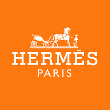
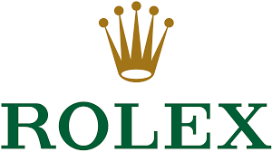

Switzerland
|
Economics
|
|Home |Sports |Gastronomy | Places Economy |forms |
|
Principal information
|
| Switzerland’s economic system is built around stability, precision, and long-term value rather than scale or spectacle: it uses the Swiss franc (CHF), a globally trusted safe-haven currency that supports low inflation, strong purchasing power, and conservative saving and investment habits; the economy is export-driven, highly innovative, and focused on high-value sectors like pharmaceuticals, precision engineering, finance, and advanced manufacturing, with strong institutions, low corruption, and a predictable legal framework that attracts global capital. |
Luxury items
|
| In terms of luxury, Switzerland is defined by quiet, heritage-driven excellence rather than overt display, led by world-class watchmaking (Rolex, Patek Philippe, Audemars Piguet, Vacheron Constantin), private banking and wealth management, ultra-exclusive alpine and lakefront real estate, iconic luxury hotels, elite education, premium healthcare, and high-end food products like chocolate and cheese—luxury here signals craftsmanship, privacy, and permanence, not flash. |
 |
 |
 |
 |
GDP and GDP per capita
|
GDP (Total Economy Size)
Switzerland has a strong and highly developed economy. Its nominal GDP is around USD 900–950 billion, which places it among the top 20 largest economies in the world. Economic growth is usually stable but moderate, averaging around 1–2% per year, reflecting a mature and well-managed economy.GDP per Capita
Switzerland is one of the richest countries in the world in terms of GDP per capita. The nominal GDP per capita is roughly USD 100,000–105,000, meaning the average economic output per person is extremely high. When adjusted for purchasing power (PPP), GDP per capita is around USD 85,000–95,000, still among the highest globally. |
Economic structures
|
| Switzerland’s economic structure is dominated by the services sector, which accounts for approximately 70–75% of GDP, followed by the industrial sector at around 25% of GDP, focusing on high-value manufacturing such as pharmaceuticals and machinery, while agriculture contributes less than 1% of GDP, playing only a minor role in the overall economy. |
Trade and exports
|
| Switzerland has a highly export-oriented economy, with exports making up a large share of GDP and often generating a trade surplus. The country mainly exports high-value products such as pharmaceuticals and chemicals, machinery, medical technology, precision instruments, and luxury watches, as well as financial and business services. The European Union is Switzerland’s most important trading partner, especially Germany, although the United States and China are also key markets, and Switzerland’s strong focus on quality, innovation, and specialization allows it to remain competitive despite high production costs. |
Copyright 2026 Ana Pau Sarahi Romi Ivonne & Ivana©
|